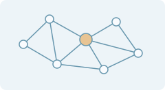
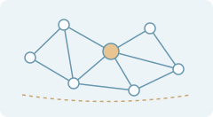
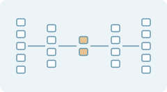
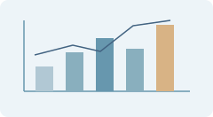
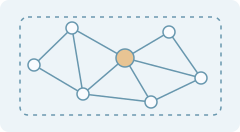
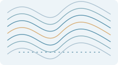

KDD 2026Spatiotemporal Graph Learning with Direct Volumetric Information Passing and Feature Enhancement
ACM SIGKDD 2026, pp. 1066-1077.
I received my Ph.D. in Artificial Intelligence from the Gaoling School of Artificial Intelligence, Renmin University of China, advised by Prof. Hao Sun. My research focuses on data intelligence, spatiotemporal AI, and heterogeneous information modeling, with the goal of developing reliable and generalizable AI methods for scientific discovery and real-world complex systems.
Selected publications and research works.
† Equal contribution. * Corresponding author.

KDD 2026ACM SIGKDD 2026, pp. 1066-1077.

KDD 2025ACM SIGKDD 2025, pp. 1056–1067.

ICME 2026
HSSC 2025Humanities and Social Sciences Communications, 12(1), 1–18, 2025.

CJM 2025ICML 2025, pp. 63929–63951.

AAAI 2026AAAI 2026, 40(2), 1096–1104.
Computer Physics Communications, 110220, 2026.
Research projects and selected research works.
Hover to pause · Select a project to explore
Applications are not represented as granted patents.